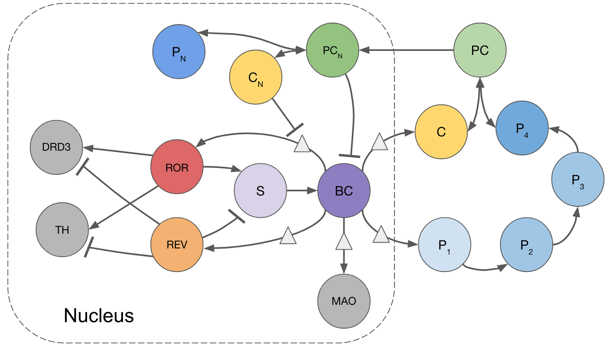

Ongoing Research Projects
Analysis
I am using ideas from bifurcation theory and numerical analysis to study the dynamics of coupled circadian oscillators. I am investigating the simultaneous robustness and flexibility of the circadian clock circuitry.
Publications
[2020] Kim, Ruby and Reed, Michael (Submitted). "A Mathematical Model of Circadian Rhythms and Dopamine."
[2018] Kim, Ruby (main author); Woods II, Timothy; and Radunskaya, Ami (faculty adviser). "Mathematical Modeling of Tumor Immune Interactions: A Closer Look at the Role of a PD-L1 Inhibitor in Cancer Immunotherapy," Spora: A Journal of Biomathematics: Vol. 4, 25–41.

Schematic diagram of our mathematical model of circadian rhythms and dopamine.
Mathematics Community and Education
Mathematics is not apolitical. As a mathematician and educator, I feel responsible for understanding the wider impacts of my research and teaching. I have been learning about the ways in which our field continues to systemically exclude women, gender minorities, and Black, Indigeneous and People of Color (BIPOC). Below is a petition written to the Duke University Mathematics Department on August 3rd, 2020. This document lists suggestions for ways we can take a stance against instiutionalized racism within the Duke math department. Also included are references that describe the histories of institutional barriers to higher education and call for the need to foster diversity, equity, and inclusion in the mathematics community.